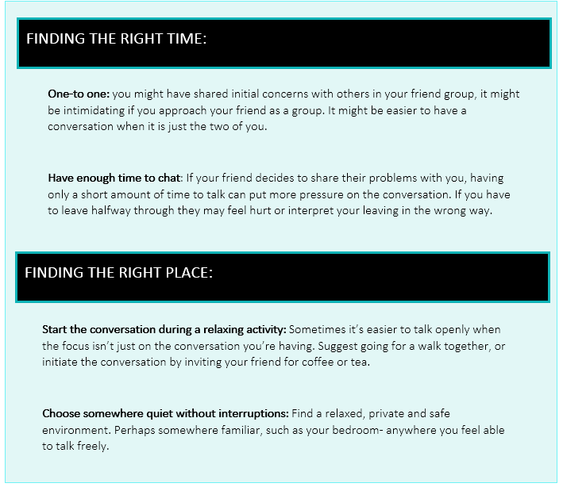
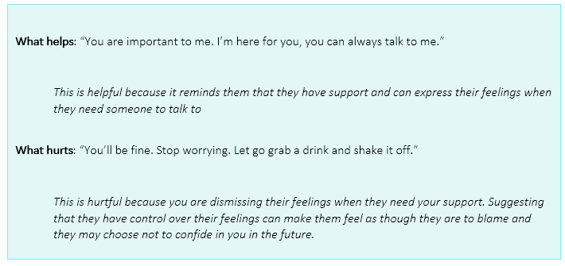
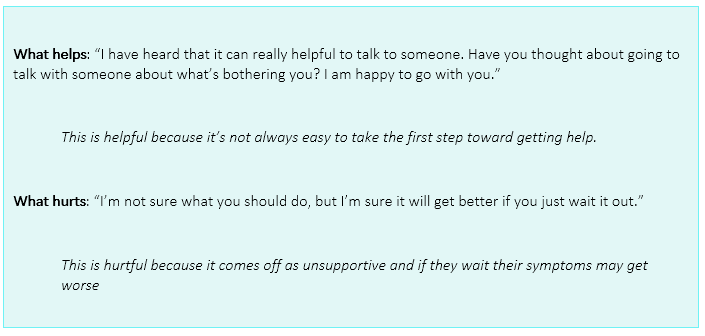

Friends are often the first, and sometimes the only ones to notice when someone needs help. It is important to provide your support, but remember: as a friend, you’re not responsible for fixing the problem. Think of it this way: if you discovered that your friend had a broken arm, you couldn’t fix it yourself, but you probably wouldn’t ignore it! Below are some ways that you can support a friend that might be having a hard time with mental health or substance use.
Sometimes it is hard to start the conversation. It is important to choose the right time and place, so that you can express yourself clearly without seeming intimidating. Here are some tips:
Don’t worry about not understanding everything that your friend is going through, or not knowing exactly the right thing to say. Remember that the conversation is not about giving advice; rather, you are giving your friend the opportunity to talk.
Ask open questions such as “what can I do to support you with that?’
These give more scope for the conversation and are more likely to encourage your friend to open up.Tell them you are concerned
and let them know you are there for them. Be straightforward and non-judgmental. Be honest and specific about why you are worried.Sometimes the best thing you can do to help your friend is to listen to them and let them express how they feel. Resist the temptation to give advice or dismiss their concerns.
Practice reflective listening: Intently listen to what your friend is saying and repeat what they expressed back to them. This can be helpful because it shows that you’ve really heard what your friend is saying and it also helps you clarify that you have accurately understood. Use phrases such as: “It seems to me that you’re saying / might be feeling...”
It is important that you support your friend, but they may benefit from talking to someone else, like a doctor or counsellor, who is better able to tell if they have a serious problem that needs treatment. Offer to help them find resources, help them schedule the first appointment, or even go with them to get help.
Be prepared for all possible reactions Your friend may not react to your concern in a positive way. They may deny the possibility that they might have a problem, become defensive, or they may not be ready to seek help. Don’t take a negative reaction personally. Don’t be pushy; be patient and let your friend know that you will be available for them if they decide to get help.
If your friend is unwilling to get help and you are still concerned and unsure what to do, you can contact a resource to get advice from a professional about what to do or how you can help.
Supporting a friend isn’t just about sharing worries and concerns – it’s also about keeping up with the things you enjoy and spending time together as friends. Meet up for lunch, cook together, go for a walk where you can talk, invite them for a Netflix night to get their mind off things while still being social.
Remember that even if your friend seems hesitant about joining in with social situations, it’s important to keep inviting them along so that they continue to feel included in your friendship group.
Stay in touch with your friend over breaks and holidays- give them a call or send them an email or text to say hi and check in on them.
Take Care of Yourself: Some people get so caught up in worrying about their friend’s mental health that they forget to take care of their own health. Make sure to take time out for yourself to do something you find relaxing. If you are feeling overwhelmed, there are many resources on campus for you to access advice and support
If your friend discloses that they are considering suicide or self-harm DO NOT keep it a secret!
All talk of suicide and self-harm must be taken seriously. If you suspect your friend is considering suicide or harming themselves or others
Please contact one of these emergency resources immediately